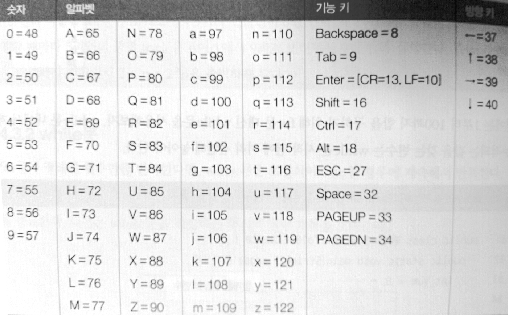

1주2주3주4주
1주
- 월
- JDK 설치
다운로드
환경변수 설정:
1. 컴퓨터 > 속성(오른쪽 마우스) > 고급 시스템 설정 > 환경변수 > (~에 대한 변수: 한 계정 / 시스템 변수: 전체)
2. PATH: 자바설치 전 위치/java/bin/
JAVA_HOME: 자바설치 전 위치/java
- Eclipse 설치
다운로드
사용법:
1. File > new > Project(Default로 Finish)
2. 폴더 우클릭 > New > Class(사용할 클래스명만 적고 Default로 Finish)
- 화
- Day02/
class Test01{
public static void main(String[] args){
System.out.println("Hello, Java!");
}
}
- 주석: Day02/
/**
*
* Java Doc
* @author Chanjung Kim
*
*/
public class Test01 {
public static void main(String[] args) {
System.out.println("안녕하세요. 자바2일차입니다.");
System.out.println("내일은 자바3일차 입니다.");
}
}
- 단축키
# Java Editor 단축키
Ctrl + Shift + M : 특정 클래스 Import 시키기
Ctrl + Shift + O : 자동으로 Import 시키기
Ctrl + Shift + F : 코드 자동 정리
Ctrl + Shift + G : 특정 메써드나 필드를 Reference하고 있는 곳을 찾는다.
Ctrl + 1 : Quick Fix. 에러가 발생했을 경우 Quick Fix를 통해 쉽게 해결이 가능하다.
Ctrl + Shift + / : 블럭 주석 설정
Alt + Shift + UP : 커서를 기준으로 토큰단위 블럭지정
Alt + Shift + DOWN : 커서를 기준으로 토큰단위 블럭해제
CTRL + L : 특정 줄번호로 가기
Alt + Shift + J : 자동으로 주석 달기 (메소드나 멤버변수에 포커스 두고 실행)
# Window 이동
F10 : 메뉴창을 활성화
Ctrl + F8 : 다음 Perspective로 이동
Ctrl + N : 새로운 파일 및 프로젝트 생성.
Ctrl + Shift + Down : Java Editor에서 다음 member로 이동.
Ctrl + F7 : 다음 View로 이동.
Ctrl + Shift + F7 : 이전 View로 이동.
Alt + <- : 이전 작업 화면
Alt + -> : 다음 작업 화면
F12 : 컴파일 중 에러등으로 포커스가 다른데로 갔을 때 Editor 로 커서 이동
Ctrl + 1 : 컴파일 에러가 발생한 곳에서 Ctrl + 1을 누를 경우 컴파일 에러에 대한 해결책을 제시
# 디버깅 단축키
CTRL + Shift + B : 현 커서의 위치에 브레이크 포인터 설정/해제
F11 : 디버깅 시작
F8 : 디버깅 계속
F6 : 한줄씩 실행(Step Over)
F5 : 한줄씩 실행하되 함수일 경우 그 함수 내부로 들어감(Step Into)
CTRL + R : 현재 라인까지 실행(Run to Line)
# Refactoring 단축키
Shift + ALT + 알파벳 : Refactoring을 위한 단축키 임.
# RUN 단축키
Ctrl + F11 : 이전에 실행되었던 Run파일 실행.
- 메소드와 변수
public class Test03 {
public static void main(String[] args) {
int x;
int y;
int sum;
x=100;
y=100;
sum=x+y;
System.out.println(sum);
return;
}
}
- 입력 받기: Scanner
import java.util.*;
public class Test04 {
public static void main(String[] args) {
Scanner sc = new Scanner(System.in);
int n1;
int n2;
int sum;
System.out.println("첫 번 째 숫자 입력하세요.: ");
n1 = sc.nextInt();
System.out.println("두 번 째 숫자 입력하세요.: ");
n2 = sc.nextInt();
sum = n1 + n2;
System.out.println("결과값: "+sum);
}
}
- 명명법
class: 대문자로 시작 ex. Main
variable, method: 소문자로 시작 ex. main
공동: 연속 단어는 _나 대문자로 표기 ex. my_name, myName
camelCase: 낙타등 표기법 (낙타등과 같이 들쑥날쑥)
// 개발자 간의 기본적인 약속임
- 자료형
byte: 주로 뒷 부분 네트워크 통신에서 사용
int: 정수
double: 실수
char: 한 단어(유니코드, utf-8) ex.'a', '1', '한'
*String은 기본자료형이 아닌 참조 자료형(대문자로 시작)
- 수
- 진법
| 구분 |
2진수 |
8진수 |
10진수 |
| 표현 가능 수 |
0, 1 |
0 ~ 7 (8개) |
0 ~ 9, A ~ F (16개) |
| 변환법 1 |
1010 1010 |
(010)(10 1)(010) |
(000010)(10 1010) |
| 변환법 2 |
2^8 |
- |
16^2 |
- +연산자의 특징
System.out.println("20"+10);
int a = 10;
System.out.println(20+10);
System.out.println(20+a);
int n = -10;
System.out.println(+n);
- 전위 연산자와 후위 연산자
public class Test01 {
public static void main(String[] args) {
int x = 100;
int y = 100;
System.out.println("x++: "+(x++));
System.out.println("++y: "+(++y));
System.out.println("x: "+x);
System.out.println("y: "+y);
System.out.println(100+200);
System.out.println("100"+200);
}
}
public class Test02{
public static void main(String[] args){
int a = 10, b, c, d, e, f;
b = a++ + 10;
c = --b * 2;
d = a + a++;
e = d-- - 5;
f = a + b;
System.out.println(a);
System.out.println(b);
System.out.println(c);
System.out.println(d);
System.out.println(e);
System.out.println(f);
}
}
public class Test02{
public static void main(String[] args){
int a = 20, b, c, d, e, f;
b = a++ + 10;
c = --b * 2;
d = --a + a++;
a = b++ + --c;
e = d-- - 5
f = a++ + b;
System.out.println(a);
System.out.println(b);
System.out.println(c);
System.out.println(d);
System.out.println(e);
System.out.println(f);
}
}
- 논리 연산자
public class Test03 {
public static void main(String[] args) {
int a=1, b=1, c=10, d=100;
boolean r1 = (a>b);
boolean r2 = (b<=c);
boolean r3 = (b<=a);
boolean r4 = (c>=d);
boolean r5 = (a==b);
boolean r6 = (b!=c);
System.out.println(r1);
System.out.println(r2);
System.out.println(r3);
System.out.println(r4);
System.out.println(r5);
System.out.println(r6);
}
}
public class Test04 {
public static void main(String[] args) {
int a=1, b=1, c=10, d=100;
boolean r1 = (a > b) && (b >= c);
boolean r2 = (c <= a ) || (a >= d);
boolean r3 = (a == c) || (b != a);
boolean r4 = !(d>c);
System.out.println(r1);
System.out.println(r2);
System.out.println(r3);
System.out.println(r4);
}
}
- 목
- 조건문 if-else
import java.util.Scanner;
public class Test01 {
public static void main(String[] args) {
Scanner sc = new Scanner(System.in);
int score;
char grade;
System.out.print("점수를 입력하세요: ");
score = sc.nextInt();
if(score>=50) {
grade = 'A';
} else {
grade = 'F';
}
System.out.println(grade);
sc.close();
}
}
- 조건문 else if문의 등장
import java.util.Scanner;
public class Test03 {
public static void main(String[] args) {
Scanner sc = new Scanner(System.in);
int score;
char grade;
System.out.print("점수를 입력하세요: ");
score = sc.nextInt();
if(score >= 70) {
grade = 'A';
}else if(score >= 40) {
grade = 'B';
}else {
grade = 'C';
}
System.out.println("당신의 학점은 "+grade+"입니다.");
sc.close();
}
}
- else if 응용
import java.util.Scanner;
public class Test05 {
public static void main(String[] args) {
Scanner sc = new Scanner(System.in);
int count = 0;
System.out.println("시험 종류를 입력하시오.: ");
String test = sc.next();
System.out.println("성적을 입력하시오.: ");
int a = sc.nextInt();
System.out.println("이름을 입력하시오.: ");
String name = sc.next();
System.out.println("엄마 이름을 입력하시오.: ");
String momName = sc.next();
if( a == 100) {
System.out.println("차석입니다.");
}
else if( a < 99) {
if( a < 99 )
if( name == "정유라" )
if( test == "수능"){
if( momName == "최순실")
System.out.println("수석입니다.");
else {
System.out.println("합격입니다.");
}
}
System.out.println("탈락입니다.");
}
else if( a < 90 ){
count++;
System.out.println("예비"+100+count+"번 입니다.");
}
else System.out.println("탈락입니다.");
// if, else if, else이 한 줄만 포함한다면 {, }는 생략 가능
sc.close();
}
}
- 조건문 Switch-case문
public class Test06 {
public static void main(String[] args) {
Scanner sc = new Scanner(System.in);
System.out.print("숫자를 입력하시오.: ");
int n = sc.nextInt();
switch(n){
case 0:
System.out.println("없음");
break;
case 1:
System.out.println("하나");
break;
case 2:
System.out.println("둘");
break;
default:
System.out.println("많음");
break;
}
sc.close();
}
}
Switch-case응용
import java.util.Scanner;
public class Test11 {
public static void main(String[] args) {
Scanner sc = new Scanner(System.in);
System.out.print("몇 년?: ");
int year = sc.nextInt();
System.out.print("몇 월?: ");
int month = sc.nextInt();
int days = 0;
switch(month) {
case 1: case 3: case 5: case 7:
case 8: case 10: case 12:
days = 31;
break;
case 4: case 6: case 9: case 11:
days = 30;
break;
case 2:
if((year%4==0 && (year%400==0)) || (year %400==0)) {
days = 29;
}else {
days = 28;
}
}
System.out.println("해당 월은 "+days+"일까지 있습니다.");
sc.close();
}
}
import java.util.Scanner;
public class Mission02 {
public static void main(String[] args) {
Scanner sc = new Scanner(System.in);
System.out.print("점수를 입력하세욥(0~100): ");
int score = sc.nextInt();
int a = 0;
char d;
a = score/10;
switch(a) {
case 9 :
d = 'A';
break;
case 8 :
d = 'B';
break;
case 7 :
d = 'C';
break;
case 6 :
d = 'D';
break;
case 5 :
d = 'E';
break;
default :
d = 'F';
break;
}
System.out.println("당신의 학점은 "+d+"입니다.");
sc.close();
}
}
- While 반복문: 여러 번 반복해야하지만, 언제 끝날 지 모를 때
public class Test08 {
public static void main(String[] args) {
int i = 1;
while(i<=5) {
i++;
System.out.println("i: "+i);
}
}
}
/* Do-While
do{
// 내용
}while(조건);
구구단 1
import java.util.Scanner;
public class Test09 {
public static void main(String[] args) {
int i = 1;
int dan;
Scanner sc = new Scanner(System.in);
System.out.print("몇 단?: ");
dan = sc.nextInt();
System.out.println("--구구단 시작--");
while(i<=9) {
System.out.println(dan + "x" + i + "=" + (dan*i));
i++;
}
System.out.println("--구구단 종료--");
sc.close();
}
}
유클리드 알고리즘
import java.util.Scanner;
public class Test10 {
public static void main(String[] args) {
Scanner sc = new Scanner(System.in);
System.out.print("숫자 1: ");
int x = sc.nextInt();
System.out.print("숫자 2: ");
int y = sc.nextInt();
int r = 0;
while( y!=0 ) {
r = x % y;
x = y;
y = r;
r = x;
}
System.out.println("최대 공약수는 "+r+"입니다.");
sc.close();
}
}
- For 반복문: 횟수가 명확할 때, 특정 번 반복할 떄
for(int i = 0 ; i < n ; i++){
}
추가: for-each 문
- 금
- 시험
JDK와 JRE의 차이?
2주
- 월
- Class와 객체
[객체지향 내용 정리]
클래스 : 객체를 만들기 위한 설계도. 필드부분과 메소드 부분으로 설계됨.
객체 : 클래스의 설계가 반영되어 실제 메모리가 할당된 독립적인 개체.
필드 : 멤버변수라고도 불리며 객체가 존재하는 동안 그안에 계속 유지되는 변수
메소드 : 함수. 명령어의 집합, 묶음. 객체 안에 존재하는 작은 부품.
참조변수를 이용해 호출할 때 실행됨.
가비지컬렉터 : new 키워드로 Heap 영역에 생성된 객체를 참조하는 변수가
하나도 존재하지 않는 경우 해당 객체를 소멸시키는 역할
package lab01;
public class BankAccount {
int balance;
void deposit(int amount) {
balance+=amount;
}
void withdraw(int amount) {
if(this.balance < 0 | this.balance < amount) {
System.out.println("잔고가 부족합니다. 거래 취소됨.");
}else {
balance-=amount;
}
}
int getBalance() {
System.out.println(balance);
return balance;
}
double addInterest(int amount) {
double interest = amount + ((double)amount*0.075);
return interest;
}
}
package lab01;
public class BankAccountTest{
public static void main(String[] args) {
BankAccount b = new BankAccount();
b.balance=500;
b.getBalance();
b.withdraw(60);
b.getBalance();
b.addInterest(b.balance);
b.getBalance();
}
}
class는 설계도면
object(객체)는 실제만들어진 것
instance는 메모리에서 사용중인 것 (객체와 동의어라고 봐도 상관 무)
Object obj = new Object();
와 같은 형식으로 객체 생성
obj. 와 같이 점으로 obj 객체의 멤버(변수/함수)에 접근 가능하다.
- 참조형 타입인 String의 다른 면모
대문자로 시작하는 String는 사실 클래스이다.
String str = new String();
로 객체 생성 가능하며
str.와 같이 점을 찍으면 멤버 메소드에 접근이 가능하다.
str.charAt(int);
str.equals(str2);
str.equalsIgnoreCase(str2);
str.length();
str.concat();
str.contains();
str.isEmpty();
str.toUpperCase();
str.toLowerCase();
Integer.toString();
- 문자 다루기 - char <-> int

Scanner sc = new Scanner(System.in);
int a = (int) sc.next().charAt(0);
int s = System.in.read();
System.out.println(a);
System.out.println(s);
- 화
- Review
객체?
참조변수(클래스변수)
클래스
가비지컬렉터 ; 시점은 알 수 없음
null이란? ex. String s = null; // s는 주소 저장 변수, null = 주소 없음, 빔
JVM구조
 기본자료형(원시형) 변수는 (땅값이 똥값인) Stack영역에
참조형(참조타입) 변수(=객체)는 Heap영역이나 Method영역에 객체 주소를 가진다.
Runtime Data Areas
->
Stack: 기본형
각 Thread마다 하나씩 존재, Thread가 시작될 때 할당
FILO(선입후출) 구조, push와 pop사용
메소드 정보, 지역변수, 매개변수, 연산 중 발생하는 임시 데이터 저장
Heap: new 연산자로 생성된는 객체, 배열
런타임 시 동적으로 할당하여 사용하는 영역
힙영역에서 생성된 객체와 배열은 Stack 영역의 변수나 다른 객체의 필드에서 참조
자세히:
일반적인 메모리 구조(C언어에서)
자바 메모리 구조
기본자료형(원시형) 변수는 (땅값이 똥값인) Stack영역에
참조형(참조타입) 변수(=객체)는 Heap영역이나 Method영역에 객체 주소를 가진다.
Runtime Data Areas
->
Stack: 기본형
각 Thread마다 하나씩 존재, Thread가 시작될 때 할당
FILO(선입후출) 구조, push와 pop사용
메소드 정보, 지역변수, 매개변수, 연산 중 발생하는 임시 데이터 저장
Heap: new 연산자로 생성된는 객체, 배열
런타임 시 동적으로 할당하여 사용하는 영역
힙영역에서 생성된 객체와 배열은 Stack 영역의 변수나 다른 객체의 필드에서 참조
자세히:
일반적인 메모리 구조(C언어에서)
자바 메모리 구조
- 배열
메모리 공간에 n크기의 배열은
[0][1][2]...[n-1]
index 0부터 n-1까지 존재함.
int[] arr = new int[5];
과 같이 5크기의 배열을 생성 (배열은 객체이다.)
index는 0부터 4까지 존재
arr.length는 길이를 알 수 있음.
배열은 길이를 정의하고 사용하기 때문에 바로 길이를 알 수 있다.
length는 arr의 멤버 변수다.(String은 str.length()와 같은 멤버 메소드이다.)
(자바 배열 선언의 예)
int[] arr = {10, 30, 20};
package test02;
import java.util.Scanner;
public class Test {
public static void main(String[] args) {
Scanner sc = new Scanner(System.in);
int n = sc.nextInt();
int[] arr = new int[n];
int sum = 0;
for(int i = 0 ; i < n ; i++) {
arr[i] = sc.nextInt();
sum+=arr[i];
}
System.out.println(sum);
sc.close();
}
}
int[] arr = {1, 7, 3, 5, 5, 1};
int sum = 0;
for( int i : arr){
sum+=i;
System.out.print(i+", ");
}
- 수
- 무진행
- 목
- 무진행
- 금
- 무진행
3주
- 월
- 무진행
- 화
- 무진행
- 수
- 무진행
- 목
- 무진행
- 금
- 무진행
4주
- 월
- 무진행
- 화
- 무진행
- 수
- 무진행
- 목
- 무진행
- 금
- 무진행